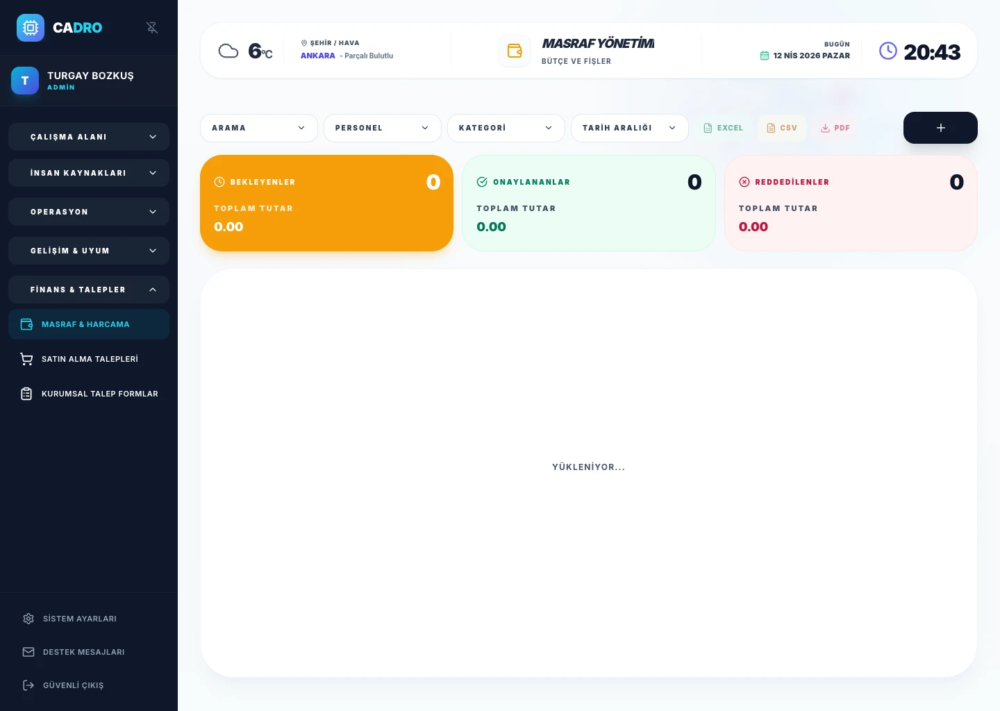

Digital Expense Claims
Employees submit expenses with photo receipts from mobile. OCR extracts key data automatically.

EXPENSE & PROCUREMENT
Expense management software: Manage employee business expenses, receipt and invoice uploads, purchase requests, and approval processes within a single structure. CADRO gives finance and operations teams full visibility, complete control, and full auditability over all company spending.

HOW IT WORKS
Paper receipts get lost, approval chains are unclear, and finance teams struggle with month-end expense reconciliation.
Digital expense submission, automated approval routing, and real-time spending dashboards.
Zero lost receipts, faster reimbursements, and complete audit trail for every expense.
MODULE FEATURES
Employees submit expenses with photo receipts from mobile. OCR extracts key data automatically.
Multi-level approval chains ensure every purchase goes through the right authorization.
Real-time dashboards show spending by category, department, and employee for full financial visibility.
FAQ
Yes. The CADRO mobile app allows photo receipt upload, expense categorization, and submission in seconds.
You configure approval chains per category and amount threshold. Requests automatically route to the designated approvers.
READY?
Digitize claims, automate approvals, and gain full spending visibility with CADRO.